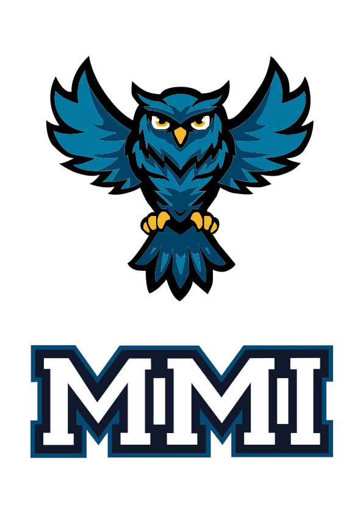

Logo Hiboux - Concours BDE
Projet personnel créé dans le cadre du concours organisé par le Bureau des Étudiants (BDE) de mon IUT pour la conception du logo qui serait imprimé sur le pull de l'année. Cette compétition m'a permis d'exprimer ma créativité tout en respectant l'identité de l'établissement.
Le logo représente un hiboux, symbole de sagesse et de connaissance, parfaitement adapté à l'univers universitaire. J'ai travaillé sur Illustrator pour créer un design vectoriel épuré et moderne, avec des lignes fluides et une composition équilibrée. L'objectif était de créer un visuel impactant qui puisse être facilement décliné sur différents supports.
Ce projet m'a permis de développer mes compétences en design de logo et en création d'identité visuelle, tout en participant activement à la vie étudiante de mon campus.
Compétences utilisées : Illustrator, Design de logo, Illustration vectorielle, Identité visuelle